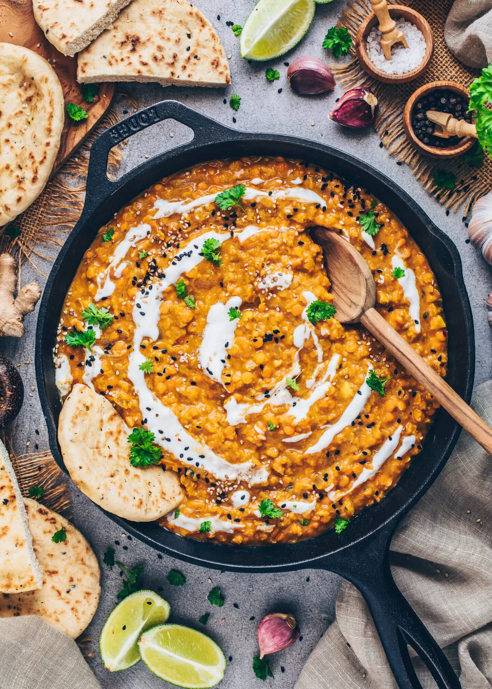

Red Lentil Dahl
Welcome to the most creamy, luscious, medium-spicy, must-have-it-NOW chicken tikka masala. This combination of chicken and spices will take your mouth on an adventure!
Ingredients
- 1 tablespoon olive oil
- 1 large yellow onion, chopped small
- 5 cloves garlic, minced
- 1 tablespoon fresh ginger, peeled and grated
- 1 tablespoon garam masala
- 1/2 teaspoon red pepper chili flakes
- 1 1/2 cups dried red lentils
- 14 ounce can diced tomatoes
- 13.5 ounce can full fat coconut milk
- 3 cups vegetable broth
- 1 teaspoon salt, or to taste
- half a lemon, juiced
- 3-4 cups baby spinach
- 4 cups cooked brown or white rice
- Vegan Naan
Preparation
- In a large pot or pan over medium heat, sauté the chopped onion in the olive oil for 5 minutes, stirring frequently.
- Then add the garlic and ginger and cook 1 more minute, until fragrant.
- Add the garam masala, turmeric and red pepper flakes to the pan and stir into the onion mixture.
- Add a few tablespoons of water if the mixture is too dry.
- Now add the dried lentils, canned tomatoes and their juices, coconut milk and vegetable broth to the pan. Stir well and turn the heat to high.
- Bring to a boil, then lower heat and simmer for about 15 minutes, until the lentils are cooked and soft. Stir occasionally.
- Squeeze the lemon juice into the pan, and stir in the spinach as well until wilted. Add salt to taste. I used 1 teaspoon.
- Serve with brown or white rice and Vegan Naan. Enjoy!